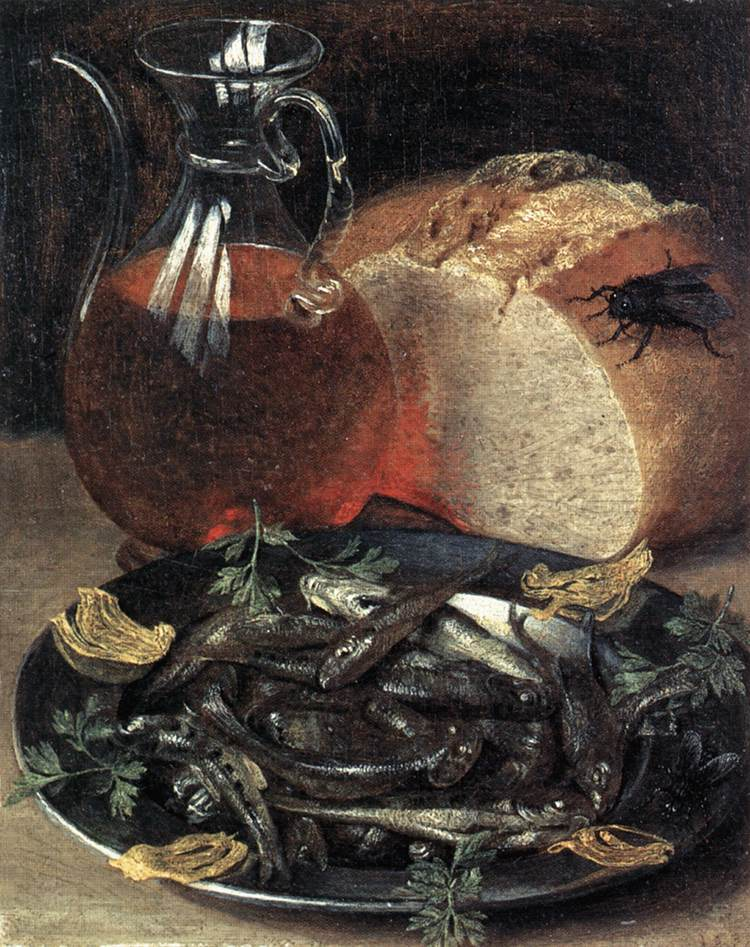
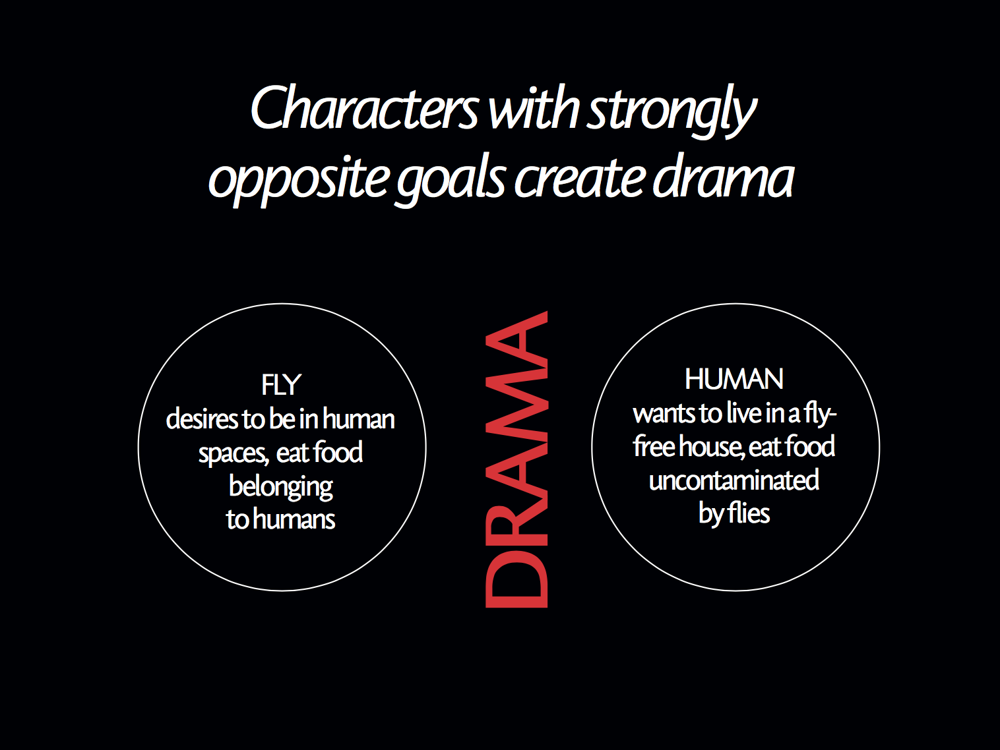
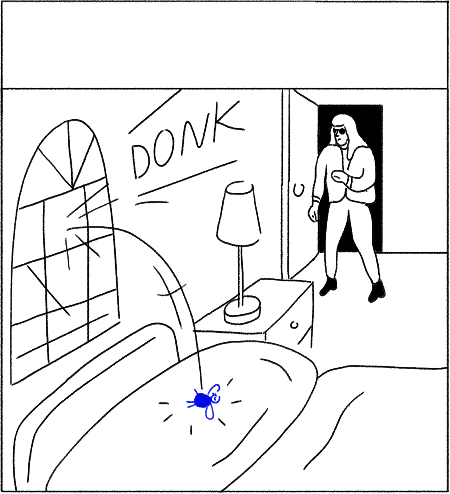

Yesterday I had my final exam. I’m still processing everything I’ve learned in the last 2 years, but while it’s still fresh in my mind, here are some notes on my project. The ideas came from my interests in art, computers, and my dissertation (about the role gaps and spaces play in audience imagination).
Shout-out to John Cage’s Indeterminacy project and David Lynch’s comic, The Angriest Dog in the World, as well as various tutors who pointed me in the right direction.
My project is a comic strip about a fly who dies in every story, and every story is six panels long.
Flies are pretty disgusting. To paraphrase Steven Connor, they flit indiscriminately from cow pat to pâtisserie. They can taste food with their feet.
When I first had the idea of a fly, a friend commented: “Why would anyone care about a fly dying?”. I stuck with it anyway, and a tutor later observed that “all cartoon characters ever are based on an animal you wouldn’t want inside your house”.
Flies are interesting because of how closely they live alongside humans. Human societies have attempted to rid themselves of flies and haven’t been able to. We’re stuck with flies.
In art, flies have been used to symbolise pleasure, decadence, a weakness for alcohol. They often serve a moral lesson about the dangers of enjoying yourself.
 A painting by Georg Flegel. Look at the eyes on that fly.
The comics are about a fly living in conflict with humans and losing every time. We like the fly: its personality is poetic, romantic, sensuous. It just wants to enjoy life, often in human spaces. Even though the fly dies in every single comic, it’s alive in the next story. To borrow a phrase Tom Phillips used about Samuel Beckett: “after the boiling of the miserable bowl, there’s a hard and irreducible speck of optimism”.
The comics are driven by rules. I wrote 8 rules to define aspects of the story and character. Story physics and story structure helped me to decide what the rules should be.
Story physics is the idea that stories follow natural laws and have a natural, almost unavoidable structure to them. The term was popularised by Andrew Stanton of Pixar.
An idea in story physics is to write characters with strongly opposite goals. This core conflict means it’s easy to imagine other parts of the story. Simplified, the fly comics are about the conflict between what a fly wants (to be in human spaces, eat food belonging to humans) versus what a human wants (to live in a house without flies, to eat food uncontaminated by flies).
Story structure is usually defined as between 3 and 5 acts, and the comics are 6 panels long. If each story ends with the death of the fly, each panel is approximately an act. Except I’ve messed with this a bit: one of the rules is an element of chance, in that the panel in which the fly dies is determined by a dice roll. If the fly dies in the second panel, the rest of the comic becomes about the aftermath of the death.

On story structure: John Yorke’s book ‘Into the Woods’ has been very influential, and this is a very good lecture he gave at Google.
Character rules were famously used by master of minimalist storytelling Chuck Jones for Wile E. Coyote and the Roadrunner.
I’ve been obsessed with the idea of evolutionary, emergent and generative ideas in art for a while. My first introduction to generative art was Conway’s Game of Life, a cellular automaton zero-player game. Dawkins experimented with simulating evolution in his biomorphs computer program back in the 1980s. I’ve struggled for a while with how to integrate this interest into my work.
Emergent design is a term I use to describe art and stories that follows rules. Although it has a strongly computational aspect, I’m interested in humans performing the work, rather than computers. It’s been hard to find a clear definition of emergent design, so this is my personal definition, which is distinct from generative design, and it sits within the bigger frame of systems art.
Sol LeWitt is an artist who also worked with rules who’s noted for his wall instructions, writing short specification for wall drawings which were carried out by another human. Unlike Sol LeWitt, I’m not interested in exposing the system: I’m interested in systems as a kind of tool for interesting creative results.
“The system is the work of art; the visual work of art is the proof of the system. The visual aspect can’t be understood without understanding the system. It isn’t what it looks like but what it is that is of basic importance.” Here are some JavaScript implementations of Sol’s rules.
I’d argue that constraint is a form of emergent design. Georges Perec wrote a 300-page novel without the letter ‘e’: this constraint produced a different outcome that would have occurred otherwise. I had a really interesting chat with my brother about this, who said: “I think the element of dissonance or stress is key: the feeling of resistance between what the author wants to say and the resistant form, which gives the product a kind of altered-subjective voice, or a different way of seeing.”
I’ve started to think about other projects using rules: it could become ridiculous. Every organic shape must include a straight line. Every sentence of the story must include a reference to a vegetable. There are some really fun potential applications for using rules to produce results, using humans.
Come to the Royal College of Art School of Communication show, 29 June to 7 July.
